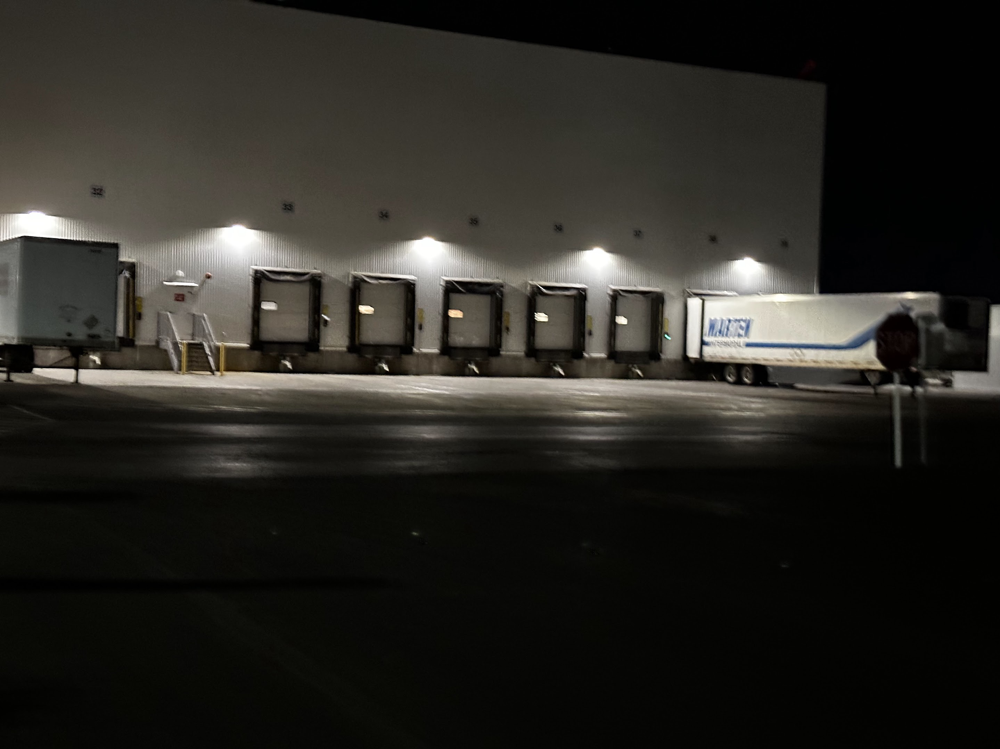

CarrierLink App: Real-Time Logistics Tracking
Rebuilding driver trust and app performance to turn a distrusted tracking tool into a 660,000-driver companion app.
Design Leadership · Field Research · Strategy
Overview
Shipment visibility is FourKites' core value proposition, yet a significant portion of carriers didn't use GPS or ELD devices. Without automated tracking, drivers were forced into constant manual check-ins, brokers and shippers lacked real-time visibility, and trust between drivers and shippers eroded.
CarrierLink® — a mobile app used by over 660,000 drivers — was positioned to fill that gap. But the app suffered from low adoption, poor ratings, trust issues, privacy concerns, battery drain complaints, and a heavy app size. As design leadership, my responsibility wasn't just to redesign the app, but to rebuild driver trust, align cross-functional teams, and make the product usable in the unique context of long-haul trucking.
Research: meeting drivers where they are
Drivers are constantly on the move, operate on tight schedules, and are often fatigued — remote interviews or scheduled calls were unrealistic. We shifted to contextual discovery: late-night field research at a distribution facility, shadowing drivers during loading and unloading wait times, and travelling with them in truck.

We paired that with app store review mining across 280+ reviews, MoEngage auditing of onboarding and permissions, and analysis of session data, drop-off, and location-permission behavior to understand the real trust barriers.

Key pain points surfaced fast: distrust ("you're tracking me, not the load"), fear of battery drain, a heavy, slow app, complex navigation, and difficulty uploading documents.
Problem framing
How might we create a frictionless, trustworthy, low-effort mobile tracking experience for drivers that improves load visibility without disrupting their workflow?
A qualitative pass over 280 reviews — 114 of them negative — surfaced three themes that became our design priorities:
| Theme | Reviews | Design priority |
|---|---|---|
| Performance (battery, data, slowdowns) | 48 | Highest — performance optimization |
| GPS location reliability | 24 | Stability of the core function |
| Trust / product identity ("why track me?") | 19 | Critical — trust building & communication |
This shared framing aligned leadership, product, engineering, CX, and sales around the same problem before a single screen was redesigned.
Design strategy: from tracking tool to driver companion
As design leader, I set three pillars for the redesign:
Trust by design — transparent location messaging, onboarding that clarifies shipment tracking rather than personal tracking, humanized UI, and privacy-first permission flows.
Performance optimization — single-tap tracking start/stop, background tracking with no driver action required, and an aggressive battery and data budget (validated later at 7% battery drain over 8 hours, using just 1.18MB of data).
Useful beyond tracking — we expanded CarrierLink into a driver utility hub: free truck-optimized routing, nearby amenities, facility insights and ratings, and document capture with signatures. This was the difference between a compliance tool drivers tolerated and a companion app they opened daily.


Impact
Through strategic research, focused feature development, and performance-driven iteration:
- 660,000+ drivers now use CarrierLink for routing, visibility, and facility information.
- CarrierLink is recognized as one of the highest-rated free apps for carriers worldwide, up from a 3.2 rating during the initial adoption crisis.
- App size was reduced by 40%, with battery and data consumption optimized to the point of validated field testing.
- Drivers gained voice-activated, truck-specific turn-by-turn navigation at no extra subscription cost, with routing options to compare time, distance, and cost.